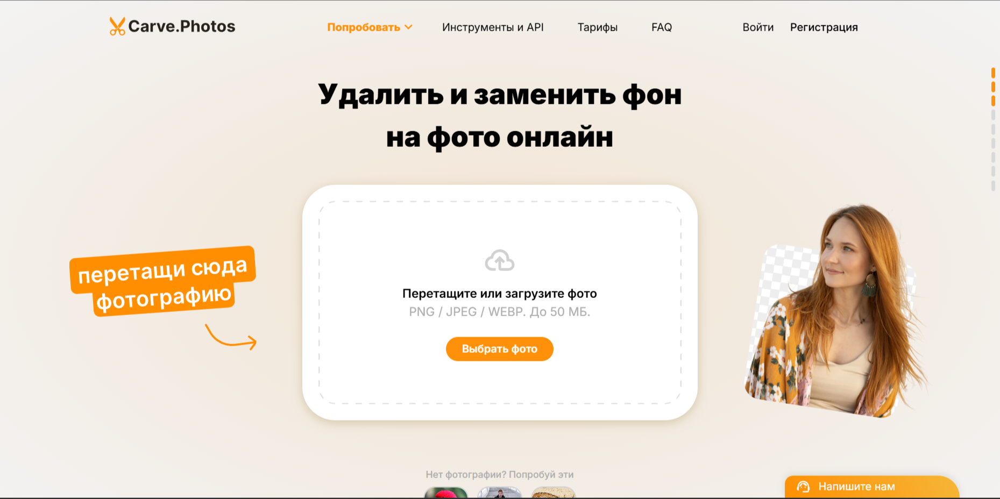

Carve.Photos — это революционный онлайн-инструмент для удаления фона с изображений, использующий передовые алгоритмы искусственного интеллекта. Сервис позволяет за считанные секунды удалить фон с фотографий, сохраняя мельчайшие детали объектов — от волос и меха до сложных узоров и прозрачных элементов.
🌟 Основной функционал
Мгновенное удаление фона
Загрузите изображение — Carve.Photos автоматически определит основной объект и удалит фон за доли секунды. Идеально работает с фотографиями людей, животных, предметов и сложных объектов.
Ручная коррекция
Инструменты для точной доработки: кисть для добавления/удаления областей, ластик для коррекции краев. Позволяет добиться идеального результата даже на сложных изображениях.
Экспорт в разных форматах
Скачивайте результат в форматах PNG (с прозрачностью), JPG (с белым фоном) или WEBP. Доступны различные разрешения и настройки качества изображения.
🚀 Как использовать Carve.Photos
- Загрузка изображения: Перетащите файл в окно браузера или нажмите кнопку "Загрузить". Поддерживаются JPG, PNG, WEBP до 12 МП.
- Автоматическая обработка: ИИ мгновенно определит основной объект и удалит фон. Время обработки — менее 2 секунд.
- Коррекция (при необходимости): Используйте инструменты ручной доработки для идеального результата.
- Скачивание: Выберите формат, качество и размер, затем скачайте готовое изображение.
Пример использования:
Исходное изображение
Результат Carve.Photos
Как видно на примере, Carve.Photos идеально справился с удалением сложного фона, сохранив мельчайшие детали волос и прозрачность очков.
💡 Уникальные возможности
Идеальная обработка краев
Уникальный алгоритм сохраняет полупрозрачные области, волосы, мех и сложные контуры без артефактов.
Работа без регистрации
Весь функционал доступен без создания аккаунта. Просто загружайте и обрабатывайте изображения.
Полностью бесплатно
Никаких скрытых платежей или ограничений. Обрабатывайте любое количество изображений бесплатно.
⚙️ Технические характеристики
| Параметр | Значение |
|---|---|
| Поддерживаемые форматы | JPG, PNG, WEBP |
| Максимальный размер файла | 15 МБ |
| Максимальное разрешение | 4000×4000 пикселей |
| Форматы экспорта | PNG, JPG, WEBP |
| Технология | Нейронные сети U²-Net |
⚠️ Ограничения и нюансы
- Сложные объекты: Могут потребовать ручной доработки (волосы, мех, прозрачные объекты)
- Размер изображения: Файлы больше 15 МБ не поддерживаются
- Пакетная обработка: Одновременно можно обрабатывать только одно изображение
- Водяные знаки: Отсутствуют на готовых изображениях
💼 Примеры применения
Для дизайнеров
Создание коллажей, оформление сайтов, подготовка изображений для печати, дизайн презентаций.
Для фотографов
Обработка портретов, создание профессиональных фото для портфолио, подготовка изображений к публикации.
Для маркетологов
Создание рекламных материалов, оформление соцсетей, подготовка товаров для интернет-магазинов.
Попробуйте Carve.Photos прямо сейчас!
Удаляйте фон с фотографий за секунды без регистрации и оплаты
Начать использовать Carve.Photos🔮 Заключение
Carve.Photos устанавливает новый стандарт в области удаления фона с изображений. Благодаря передовым алгоритмам искусственного интеллекта, сервис обеспечивает профессиональные результаты за доли секунды, полностью бесплатно и без необходимости регистрации.
Инструмент особенно полезен для дизайнеров, фотографов, маркетологов и всех, кто работает с визуальным контентом. Простота использования в сочетании с мощными возможностями делает Carve.Photos незаменимым помощником в цифровом творчестве.